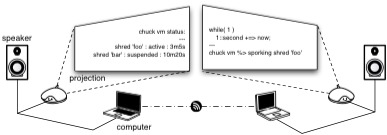

Language Specification
(also see API Reference)
(also see API Reference)
ChucK | Language Specification

ChucK is a strongly-typed, strongly-timed, concurrent audio and multimedia programming language. It is compiled into virtual instructions, which are immediately run in the ChucK Virtual Machine. This guide documents the features of the Language, Compiler, and Virtual Machine for a ChucK programmer.